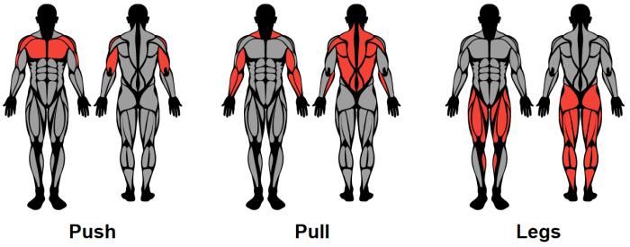
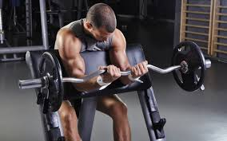
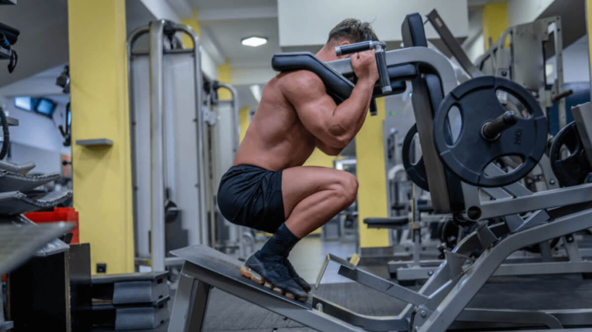

Rutina Push-Pull-Legs para Novatos
Enlace para navegar en el sitio web

LUNES - Push / Empuje
Press de banca con barra: 3 series de 6 a 8 repeticiones
Press de hombro con mancuernas: 3 series de 5 a 7 repeticiones
Press de banca inclinado con mancuernas: 3 series de 7 a 9 repeticiones
Elevaciones laterales con mancuernas: 3 series de 10 repeticiones
Press francés para tríceps: 2 series de 10 repeticiones
Elevaciones frontales con mancuernas: 2 series de 20 repeticiones

MIÉRCOLES - Pull / Jalón
Remo al pecho en máquina: 3 series de 7 repeticiones
Dominadas: 3 series de 10 a 12 repeticiones
Remo con mancuerna en banco: 3 series de 10 repeticiones con cada brazo
Face pulls: 2 series de 12 repeticiones
Curl de bíceps en banco Scott con barra Z: 3 series de 8 repeticiones
Curl de bíceps alterno con mancuernas: 3 series de 20 repeticiones

VIERNES - Legs / Piernas
Sentadillas: 3 series de 8 repeticiones
Peso muerto: 3 series de 8 repeticiones
Cuádriceps en máquina: 2 series de 20 repeticiones
Curl de femoral en máquina: 3 series de 12 repeticiones
Gemelo en máquina: 3 series de 12 repeticiones
Prensa o zancadas: 3 series de 10 repeticiones

Otros ejercicios para cambiar tu rutina
- Press inclinado con barra
- Press apoyado con barra Z
- Press militar sentado
- Sentadilla Smith
Lista de pasos para lograr un entrenamiento completo
- Realiza un calentamiento adecuado antes de entrenar (5-10 minutos)
- Dependiendo de que grupo muscular te toque, checa la disponibilidad de la maquina
- Intercala entre ejercicios realizados en maquina y calistenia
- Realiza entre 60-80 minutos de ejercicio
- Dedica 15-20 minutos de cardio para mejorar tu rendimiento
- Recuerda que debes de mantener una actividad moderada, no solo hagas gym
Rutina Push-Pull-Legs y Cardio
Cardio despues de ejercicios
| Rutina |
Cardio Moderado |
Cardio Intenso |
Cardio Ligero |
| Rutina Push |
20 minutos en bicicleta |
15 minutos de HIIT |
30 minutos caminando |
| Rutina Pull |
20 minutos de remo |
10 sprints de 30 segundos |
20 minutos de caminata rápida |
| Rutina Legs |
25 minutos en elíptica |
20 minutos de spinning |
40 minutos de trote ligero |
| Debes elegir un tipo de cardio segun tus objetivos. |
Video
Video explicativo para una rutina Push-Pull-Legs
Echale un vistazo rapido a mi primera página de HTML